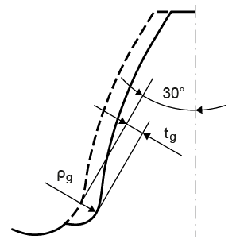

|
|
|


磨削凹槽
根据 DIN 3990 或 ISO 6336 的定义，磨削凹槽的影响可通过系数 YSg 来考虑。在此，您输入 tg 与磨削凹槽半径 ϱg 的比值，依据 DIN 3990-3 第 4.4 节或 ISO 6336-3 图 5 中的图示。随后，KISSsoft 计算系数 g = YSg/Y S（YS 与之相乘的系数）。
磨削凹槽深度 tg 是根据 30° 切线从初步轮廓到最终轮廓的距离计算得出的。如果已经在 KISSsoft 中输入了预加工的加工余量（见图 14.11），则比值 tg/ϱg 不能再由用户输入。在这种情况下，它由程序定义。当输入了磨削深度（参见"修形"章），且没有保留凸台（要么是因为未使用凸台刀具，要么是所选加工余量过小）时，就会产生磨削凹槽。随后，磨削圆角半径 ϱg 通过使砂轮沿 30° 切线（对于内齿轮为 60° 切线）展成来定义。

图 15.9：磨削凹槽
Grinding notch
As defined in DIN 3990 or ISO 6336, the effect of the grinding notch can be taken into account by the coefficient YSg . Here, you input the ratio tg to the radius of grinding notch ϱg in accordance with the figure in DIN 3990-3, section 4.4 or ISO 6336-3, Figure 5. KISSsoft then calculates a coefficient g = YSg/Y S (a coefficient with which YS is multiplied).
The grinding notch depth tg is calculated using the distance of the 30° tangents from preliminary contour and the finished contour. If an allowance for pre-machining has already been input in KISSsoft, (see Figure. 14.11), then the ratio tg/ϱg can no longer be entered by the user. In this case, it is defined by the program. A grinding notch occurs when a grinding depth (see chapter Modifications) has been entered, and no protuberances remain, either because no protuberance tool was used, or the selected allowance was too small. The rounding radius ϱg is then defined by generating the grinding wheel on the 30°- tangent (on the 60° tangent for internal toothings).
Figure 15.9: Grinding notch